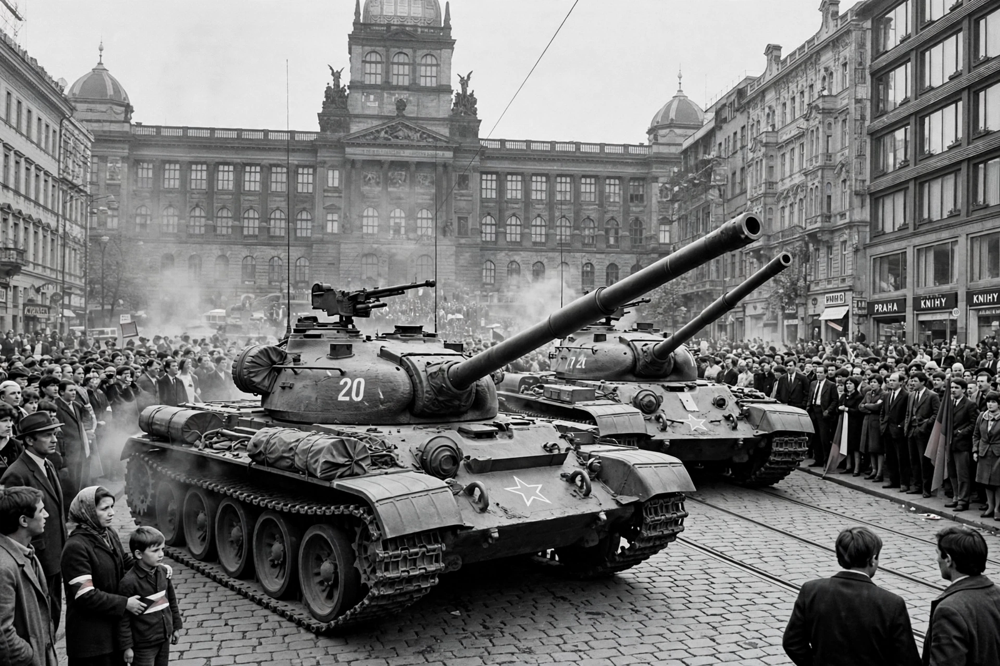

Wikipedia > Warsaw Pact invasion of Czechoslovakia
Warsaw Pact invasion of Czechoslovakia

The Warsaw Pact invasion of Czechoslovakia, codenamed Operation Danube, was a joint invasion of Czechoslovakia by five Warsaw Pact countries — the Soviet Union, Poland, East Germany, Hungary and Bulgaria — on the night of 20–21 August 1968. Approximately 250,000 Warsaw Pact troops, later rising to some 500,000, together with thousands of tanks, attacked the country to halt the political liberalisation of the Prague Spring under First Secretary Alexander Dubček.
Background
Dubček's "Socialism with a human face" programme loosened censorship, rehabilitated victims of earlier purges and raised the prospect of a more pluralist Czechoslovakia. The Soviet leadership under Leonid Brezhnev feared the reforms would undermine communist rule across the Eastern Bloc. After negotiations at Čierna nad Tisou and Bratislava failed to produce a reversal, Moscow decided on military intervention, later rationalised by the Brezhnev Doctrine, which asserted the right of the USSR to intervene when socialism was threatened in any bloc state.
The invasion
On the night of 20–21 August 1968, troops crossed the borders while airborne forces seized Prague's Ruzyně airport. Dubček and other leaders were arrested and flown to Moscow. There was no organised military resistance: the Czechoslovak army was ordered to remain in barracks, and the population responded with widespread passive resistance — removing street signs, refusing supplies and arguing with soldiers. Scores of civilians were killed during the invasion and the ensuing occupation; estimates of Czechoslovak deaths in 1968 range from about 108 to 137.
Aftermath
The Moscow Protocol, signed under duress, committed the Czechoslovak leadership to reversing the reforms. Dubček was replaced by Gustáv Husák in April 1969, and a period of "normalisation" followed, during which hundreds of thousands were expelled from the Communist Party, censorship was restored and reformers were purged from public life. Soviet troops remained stationed in Czechoslovakia until 1991.
Legacy
The invasion deepened divisions in the international communist movement, was condemned by Yugoslavia, Romania, China and Albania, and provoked protests in the West. In January 1969 the student Jan Palach set himself on fire in Wenceslas Square in protest. The events of 1968 became a defining memory of the Cold War and a reference point for the dissent movements that culminated in the Velvet Revolution of 1989.
See also: Prague Spring · Brezhnev Doctrine · Hungarian Revolution of 1956